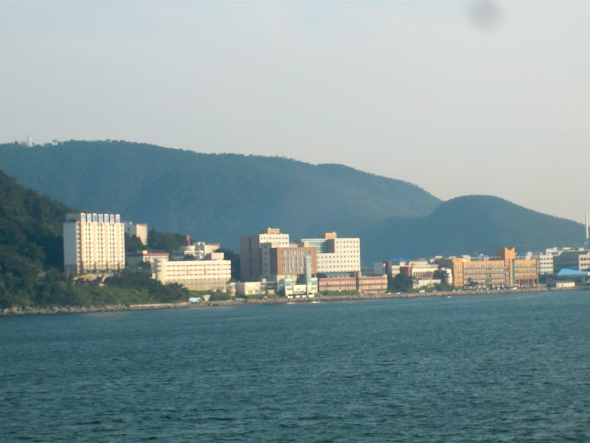

국립한국해양대학교(한국해양대)는 부산광역시 영도구 태종로에 있는 국립대학입니다. 1945년에 문을 연 해양 분야 특성화 국립대로, 캠퍼스 전체가 바다로 둘러싸인 섬에 있다는 점이 다른 대학과 확연히 다릅니다.
2027학년도 수시 원서접수는 2026년 9월 7일부터 11일까지였고, 이미 마감됐습니다. 다만 이 글을 지금 올리는 이유가 있습니다. 올해 한국해양대는 단과대학 자체를 개편하면서 모집단위 명칭이 대폭 바뀌었기 때문입니다. 지원을 마친 고3도, 내년을 준비하는 고2·고1도 이 변화를 모르면 작년 자료를 그대로 보다가 헛짚게 됩니다.
대학이 공고한 2027학년도 전형 시행계획의 핵심 변화를 먼저 정리하면 이렇습니다.
- 단과대학 개편에 따라 모집단위 명칭이 대폭 변경
- 수시·정시 전형별 모집인원 조정
- 수시 일부 전형에 수능최저학력기준 신설
- 체육특기자전형의 반영 비율 조정
① 모집단위 이름이 바뀌었다는 말의 무게
학과 이름이 바뀌는 것은 흔한 일처럼 들립니다. 그런데 이번처럼 단과대학 체제를 개편하면서 이름이 한꺼번에 바뀌는 경우는 성격이 다릅니다. 이름만 바뀌는 것이 아니라, 학과가 합쳐지거나 학부로 묶이거나 모집 단위 자체가 달라지기 때문입니다.
수험생에게 이것이 왜 문제가 되느냐면, 작년 입시결과를 그대로 쓸 수 없게 되기 때문입니다. 두 학과가 하나의 학부로 묶이면 작년의 두 경쟁률·두 등급컷은 올해 숫자와 직접 비교되지 않습니다. 반대로 하나가 둘로 쪼개져도 마찬가지입니다.
현재 한국해양대는 항해융합학부, 기관시스템공학부, 해사인공지능·보안학부, 해운경영학부, 해사법학부, 조선해양시스템공학부, 해양공학과, 에너지자원공학과, 국제관계학과, 데이터사이언스학과 등의 모집단위를 두고 있습니다. 이름에서 짐작하실 수 있듯 해양·해사 계열과 공학·인문사회 계열이 함께 있는 구조입니다.
내년 이후를 준비하신다면 원칙은 하나입니다. 지난해 입시결과표를 볼 때 그 학과 이름이 올해도 같은 이름으로 남아 있는지부터 확인하십시오. 이름이 바뀌었거나 소속 단과대학이 달라졌다면, 그 숫자는 참고 자료일 뿐 기준선이 아닙니다.
② 수능최저 — 없던 곳에 새로 생겼습니다
2027학년도에 눈에 띄는 변화는 학생부교과 교과성적우수자전형의 해양스포츠과학과에 수능최저학력기준이 새로 적용됐다는 점입니다. 기준은 이렇습니다.
- 수학 · 영어 · 탐구(사회/과학) 3개 영역 중 1개 영역 이상이 5등급 이내
- 탐구영역은 2개 과목의 등급 평균을 적용
'3개 중 1개만 5등급 이내'는 높은 벽이 아닙니다. 다만 성격을 정확히 보셔야 합니다. 지금까지 수능 없이 갈 수 있던 길에 수능이라는 관문이 하나 생긴 것입니다. 기준이 낮아도 충족하지 못하면 불합격입니다. 특히 실기나 내신 준비에 집중하느라 수능을 사실상 놓아 버린 학생이라면, 5등급이라는 기준도 저절로 충족되지는 않습니다.
탐구 2개 과목의 등급 평균을 쓴다는 점도 함께 보셔야 합니다. 앞서 다뤘던 여러 대학처럼 '상위 1개 과목만 반영'하는 방식이 아니므로, 한 과목만 집중해서 올리는 전략이 여기서는 그대로 통하지 않습니다. 두 과목을 고르게 가져가야 평균이 지켜집니다.
나머지 전형의 수능최저 적용 여부와 구체적 기준은 이 글에서 확정해 말씀드리지 않겠습니다. 모집요강 원문에서 본인 지원 모집단위 기준으로 확인하셔야 하는 항목입니다.
③ 학생부교과 — 교과성적우수자와 지역인재
한국해양대 수시의 학생부교과에는 교과성적우수자전형과 지역인재전형이 있습니다.
교과성적우수자전형은 이름 그대로 내신 성적이 중심인 전형입니다. 서류 정성평가가 섞이지 않는 구조는 예측이 비교적 쉬운 대신, 등급이 그대로 결과가 됩니다.
지역인재전형은 면접을 실시하며, 1단계 합격자를 먼저 발표하는 단계별 전형으로 운영됩니다. 1단계에서 서류나 교과로 일정 배수를 추린 뒤 2단계에서 면접을 보는 구조라는 뜻입니다. 1단계 배수와 2단계 반영 비율은 전형과 모집단위마다 다르므로 요강에서 직접 확인하셔야 합니다.
지역인재에서 학부모님들이 가장 많이 혼동하시는 것이 자격 요건입니다. 두 가지를 구분해 두십시오.
- 2027학년도 — 해당 지역 고등학교에서 고교 3년 전 과정을 이수한 학생이 대상입니다.
- 2028학년도부터 — 여기에 더해 중학교 때부터의 거주 요건이 강화됩니다. 지금 중학생인 자녀가 지역인재를 염두에 두고 있다면, 고등학교 진학 시점이 아니라 지금의 거주지와 중학교 소재지가 이미 조건에 들어간다는 뜻입니다.
부산·울산·경남권에 사시는 중학생 학부모님이라면 이 대목을 특히 기억해 두시기 바랍니다. 나중에 알면 되돌릴 수 없는 항목입니다.
④ 학생부종합 아치해양인재전형 — 이름에 담긴 방향
한국해양대의 학생부종합은 아치해양인재전형이라는 이름으로 운영됩니다. 'ARCH'는 대학이 오래 써 온 상징에서 온 이름입니다.
전형 이름에 '해양'이 들어가 있다는 점을 가볍게 보지 마시기 바랍니다. 학생부종합은 대학이 어떤 학생을 원하는지를 전형 이름과 인재상에 적어 두는 전형입니다. 해양 특성화 국립대의 종합전형이라면, 서류에서 보고 싶어 하는 것이 일반 종합대학과 같을 수 없습니다.
그렇다고 "바다 관련 동아리를 만들어야 한다"는 뜻은 아닙니다. 그런 식의 접근은 오히려 얕게 보입니다. 학생부종합에서 힘을 내는 기록은 늘 같습니다. 한 방향으로 이어지는 기록입니다. 2학년 때 궁금해한 것이 3학년 탐구로 이어지고, 그 과정에서 무엇이 막혔고 어떻게 풀었는지가 남아 있는 기록입니다.
면접이 있는 전형이라면 준비의 핵심도 정해져 있습니다. 자기 학생부에 적힌 내용을 자기 입으로 설명할 수 있는가입니다. 기록에 있는데 말로 못 하면, 그 기록은 평가에서 힘을 잃습니다. 화려한 답변이 아니라 자기 활동의 동기와 막힌 지점을 담담하게 말할 수 있으면 충분합니다.
정원 외로는 농·어촌학생, 특성화고교 졸업자, 기회균형선발 등의 전형도 운영됩니다. 지원 자격 요건이 까다로운 전형들이므로, 해당 여부는 반드시 요강의 자격 기준 원문으로 확인하셔야 합니다.
⑤ 체육특기자전형 — 실적보다 면접 쪽으로 무게가 옮겨갔습니다
체육특기자전형에서도 반영 비율이 조정됐습니다.
- 입상실적 60% → 50% (축소)
- 면접고사 20% → 30% (확대)
10%p씩의 이동이지만 방향이 분명합니다. 과거의 성적표보다 지금의 태도와 계획을 더 보겠다는 뜻입니다. 입상실적은 이미 확정된 값이라 지원 시점에 바꿀 수 없습니다. 반대로 면접은 준비한 만큼 달라집니다. 실적이 조금 부족해도 면접에서 만회할 여지가 넓어졌다는 의미이고, 실적이 좋아도 면접을 흘려보내면 안 된다는 의미이기도 합니다.
⑥ 섬에 있는 캠퍼스 — 지원 전에 꼭 확인할 것
한국해양대의 가장 큰 특징은 캠퍼스가 부산 영도의 섬 안에 있다는 점입니다. 위 사진처럼 바다에서 바라보면 해안선을 따라 건물이 늘어선 모습이 보입니다.
이 구조는 장점이자 고려 사항입니다. 조용하고 집중하기 좋은 환경인 대신, 통학과 생활 여건이 도심 캠퍼스와 다릅니다. 진학을 진지하게 고민 중이라면 한 번은 직접 가 보시기를 권합니다. 대학 선택에서 4년을 어디서 어떻게 지내게 되는지는 생각보다 크게 작용합니다.
또 하나. 한국해양대의 해사 계열 모집단위(항해·기관 분야)는 일반 학과와 성격이 다릅니다. 이 계열은 졸업 후 진로와 연결된 별도의 요건이 따라붙을 수 있습니다. 구체적인 요건은 이 글에서 확인하지 못했으므로 단정해 말씀드리지 않겠습니다. 다만 해사 계열 지원을 생각하신다면 전형 방법만 보지 마시고, 입학 후 이수 과정과 졸업 요건까지 요강과 학과 안내에서 반드시 함께 확인하시기 바랍니다. 일반 학과와 같다고 전제하고 지원하면 입학 후에 당황할 수 있습니다.
⑦ 학년별로 지금 챙길 것
- 고3 — 원서는 마감됐습니다. 면접이 있는 전형에 썼다면 1단계 발표를 기다리는 동안 자기 학생부를 처음부터 다시 읽고 예상 질문을 뽑아 두세요. 수능최저가 걸린 모집단위에 썼다면, 남은 일은 그 기준을 맞추는 것 하나입니다.
- 고2 — 내년 입시결과표를 볼 때 학과 이름이 그대로인지부터 확인하는 습관을 들이세요. 개편이 있었던 대학은 작년 숫자가 기준이 되지 못합니다. 지역인재를 생각한다면 고교 3년 이수 요건을 지금 확인해 두십시오.
- 고1 — 국립대는 대체로 내신 비중이 크고, 1학년 성적이 3년 내신에 그대로 쌓입니다. 지금의 한 학기가 나중에 지원 가능한 전형의 폭을 정합니다.
- 중학생 — 부산·울산·경남에 사신다면 2028학년도부터 강화되는 지역인재 거주 요건을 지금 아셔야 합니다. 고등학교에 올라간 뒤에는 되돌릴 수 없는 조건입니다.
와와 학습코칭센터에서는 아이의 내신과 과목별 상태를 진단해, 목표 대학·전형의 기준에 맞춰 지금 무엇부터 채워야 할지 함께 정리해 드립니다. 가까운 센터에서 무료 상담을 받아 보실 수 있습니다.
※ 본 글은 국립한국해양대학교의 2027학년도 대학입학전형 시행계획 수정 공고 관련 보도와 대학 입학정보 공개 내용을 바탕으로 정리했습니다. 전형별 모집인원, 학생부교과의 반영 교과·학년별 반영 비율, 지역인재전형의 1단계 선발 배수와 2단계 면접 반영 비율, 아치해양인재전형의 서류평가 항목별 배점, 면접 형식과 일자, 합격자 발표 일정, 해사 계열 모집단위의 입학 후 이수·졸업 요건은 확인하지 못해 이 글에 담지 않았습니다. 개편된 단과대학 체제의 최종 모집단위 명칭과 소속도 확정 표기하지 않았습니다. 모집인원과 관련한 숫자는 확인되지 않아 일절 기재하지 않았습니다. 사진은 과거에 촬영된 것으로 현재 모습과 다를 수 있습니다. 시행계획은 개요이며 세부 사항은 모집요강에서 확정되고, 한국대학교육협의회 심의 결과에 따라 변경될 수 있습니다. 반드시 국립한국해양대학교 입학본부의 2027학년도 수시모집요강 원문에서 본인 지원 모집단위 기준으로 최종 확인하시기 바랍니다.